Prova social
O que o Ethos
já entregou
0
de redução de turnover
0
projetos entregues
0
anos em educação executiva
0
anos de relação contínua
"A Dani não é apenas uma consultora. Ela se envolve e se doa de corpo e alma. Cuida das nossas estratégias como se fossem dela."
"Trabalhamos com a Daniela há mais de 5 anos. Criativa e com didática impecável, aborda os temas com profundidade e precisão."
Empresas onde já entregou resultados
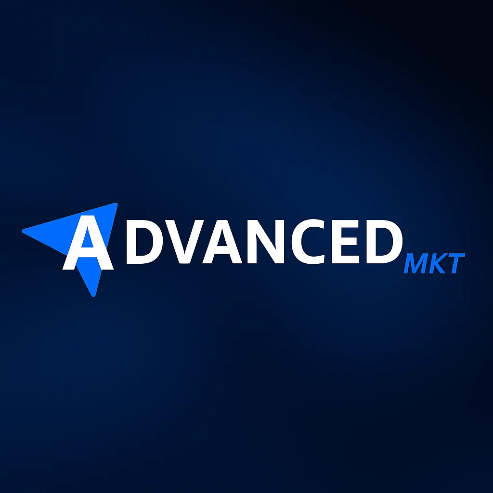
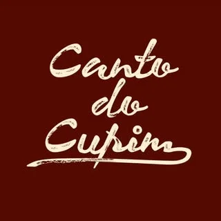
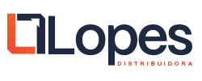
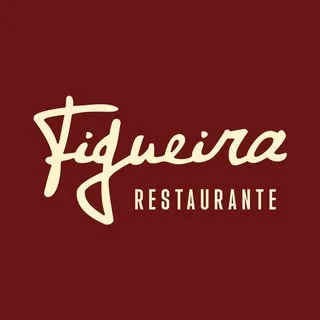
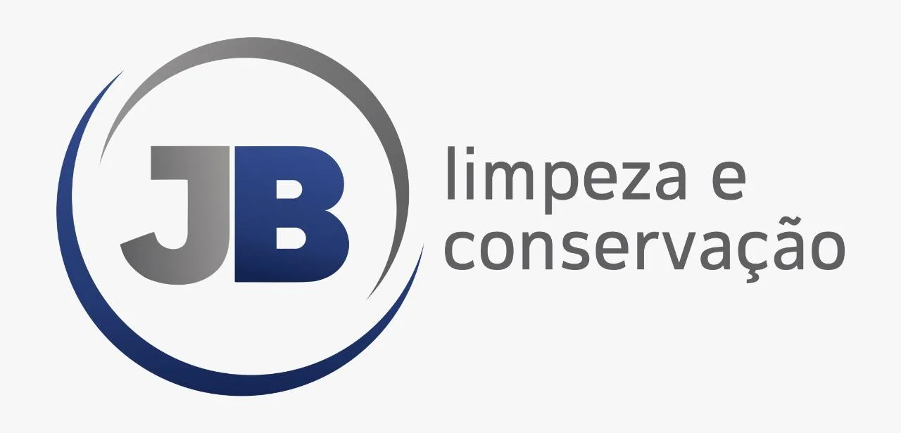

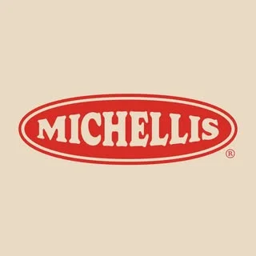
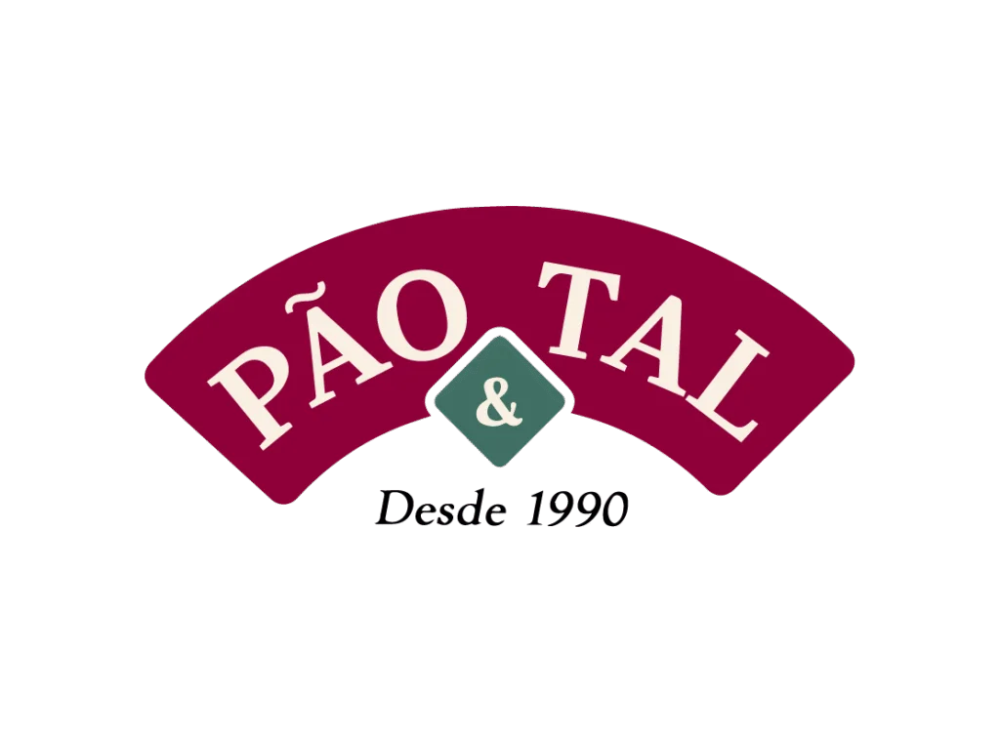
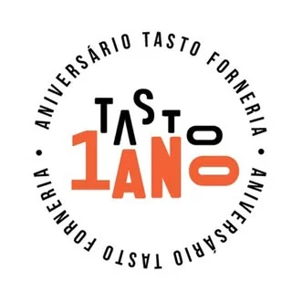
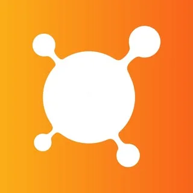
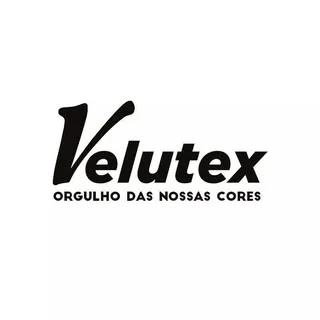

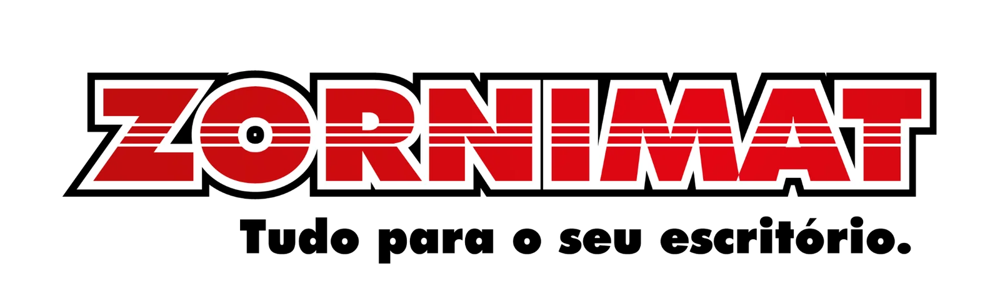
Turma Aberta
Pela primeira vez,
para você.
Para líderes que querem crescer agora, independente de suas empresas.
-
→
Encontros presenciais em grupo
Uma imersão presencial ao lado de líderes de setores distintos — saúde, varejo, tecnologia, indústria, alimentação — que compartilham o mesmo compromisso com o desenvolvimento. A diversidade de contextos é intencional: ela força você a enxergar seus desafios de ângulos que sua bolha corporativa jamais ofereceria. Você expandirá um network de valor real enquanto troca vivências autênticas com pessoas que enfrentam desafios idênticos aos seus, mas chegaram a soluções que você ainda não considerou. Muitos participantes relatam que as conexões formadas nos encontros se tornam relações profissionais e pessoais duradouras.
-
→
Material exclusivo SYM Gente e Gestão
Todo o arsenal metodológico da SYM Gente e Gestão, construído e validado em mais de 50 projetos corporativos ao longo de 20 anos, estará nas suas mãos. Isso inclui: diagnósticos avançados de perfil comportamental e nível de maturidade de equipe; mapas táticos de resolução de conflitos organizacionais; frameworks de comunicação de autoridade sem autoritarismo; guias práticos de delegação efetiva; e ferramentas de gestão de energia e temperança para líderes sob alta pressão. Materiais que você continua usando anos depois de terminar o programa.
-
→
Certificado de conclusão
Ao concluir o programa, você recebe o certificado físico da Escola de Caráter Ethos Leadership, emitido pela SYM Gente e Gestão e assinado por Daniela Athia. O documento atesta sua formação nas seis virtudes da liderança virtuosa e a conclusão do ciclo de desenvolvimento com carga horária registrada. Mas, como Daniela costuma dizer: seu verdadeiro certificado será a mudança que as pessoas ao seu redor vão notar antes mesmo de você terminar o programa. O papel confirma o que o comportamento já vai ter demonstrado.
-
→
Comunidade de líderes sérios
Ser um líder de alto nível pode ser uma jornada solitária. A maioria das pessoas ao seu redor não compartilha a mesma régua de exigência — e isso isola. No Ethos, você entra para uma comunidade de líderes que levam desenvolvimento a sério e que continuam se encontrando muito além do término do programa. Um grupo onde é seguro admitir incertezas, pedir feedback real e compartilhar avanços sem vaidade. Um conselho não oficial de pessoas que entendem o que você está construindo porque estão construindo algo semelhante.
-
→
Vagas limitadas · turma reduzida
O Ethos Leadership não escala porque não foi desenhado para escalar. Cada turma é composta por um número reduzido de participantes — o suficiente para garantir que cada líder seja visto, ouvido e desafiado de forma individual. Essa escolha tem um custo deliberado: significa que há sempre mais interessados do que vagas disponíveis. Significa também que as discussões nos encontros têm profundidade real, que o sigilo das informações corporativas compartilhadas é preservado, e que Daniela Athia conhece o nome, o contexto e o desafio de cada pessoa na sala.
O que você vai desenvolver
Escola de Caráter
Não é um treinamento. É uma escola. Uma escola de caráter.
- As seis virtudes da base filosófica à aplicação prática no seu dia a dia
- Autoconhecimento real, não o superficial das ferramentas de perfil
- Ferramentas concretas, feedback, tomada de decisão, gestão de conflitos
- Uma comunidade de líderes que levam desenvolvimento a sério
- Mentorias com Daniela Athia — +20 anos de experiência real
A Fundadora
Daniela
Athia
"Sou Daniela Athia, psicóloga e especialista em desenvolvimento humano, com mais de 20 anos de experiência em gestão estratégica de pessoas."
Desde 2006 ajudo organizações de múltiplos portes a construir gestão e áreas sólidas e estratégicas num desenvolvimento sustentável.
Com mais de 50 projetos conduzidos, formei líderes e fortaleço o nível corporativo em diversas marcas premiadas de altíssima relevância.
Minha visão técnica e sensibilidade humana transformam culturas organizacionais genéricas em reais estruturas de alto crescimento constante e firme.
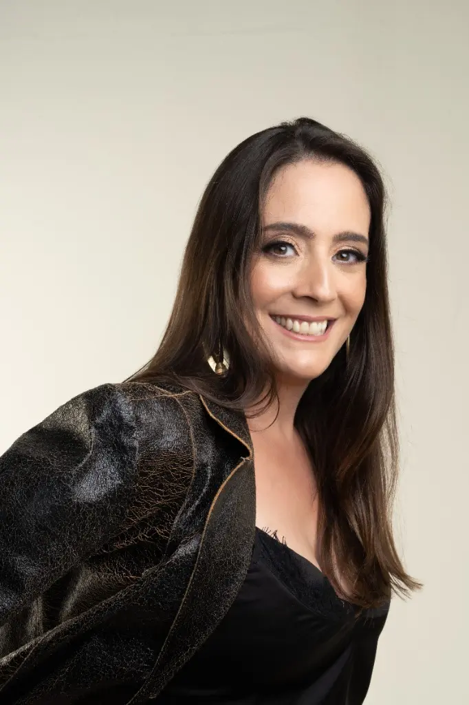
A Jornada
Cronograma dos
Encontros
-
→
11/06 — Encontro 1: Ethos: O Líder que Você É
Virtude: Humildade
O ponto de partida da jornada. Antes de liderar qualquer pessoa, o líder precisa se conhecer: seus talentos reais, seus limites reais, e a distância entre quem ele acredita ser e quem ele de fato é. Este encontro questiona a identidade do líder de dentro para fora.
Conteúdo central:
- O que é caráter e por que ele lidera antes da técnica
- As três eras da liderança: tubarão, bonzinho, virtuoso e onde você está
- Humildade como fundação: a diferença entre falsa modéstia e autoconhecimento real
- Diagnóstico de si: mapa de talentos, shadows e padrões de comportamento
- O conceito de ethos em Aristóteles: caráter como hábito construído, não dom recebido
-
→
25/06 — Encontro 2: A Arte de Decidir Bem
Virtude: Prudência
A prudência não é cautela é inteligência prática. É a virtude do líder que pensa antes de agir e considera o impacto humano e organizacional de cada escolha. Neste encontro, o líder aprende a distinguir urgência de importância e velocidade de precipitação.
Conteúdo central:
- Phronesis aristotélica: a sabedoria prática que separa o líder do gestor
- Os quatro inimigos da boa decisão: pressa, ego, medo e falta de informação
- Decisões impopulares que precisam ser tomadas, e como tomá-las com integridade
- O líder como árbitro moral da equipe: quando seu julgamento molda a cultura
- Estudo de caso: decisões que definiram (ou destruíram) organizações reais
-
→
09/07 — Encontro 3: Dar a Cada Um o Que É Seu
Virtude: Justiça
A justiça é a virtude relacional da liderança, ela define como o líder trata as pessoas. Cobrar de forma justa, reconhecer o mérito, criar um ambiente onde as regras valem para todos. Sem justiça, a cultura apodrece e nenhum treinamento de clima organizacional conserta isso.
Conteúdo central:
- Justiça como virtude e não como norma: a diferença entre cumprir regras e tratar bem
- O líder que cobra e o líder que pune: distinção fundamental
- Reconhecimento como ato de justiça, por que elogiar também é dever do líder
- Favoritismo, nepotismo e dois pesos duas medidas: como o líder corrói a cultura sem perceber
- Feedback justo: como dar retorno que desenvolve em vez de diminuir
-
→
30/07 — Encontro 4: O Líder que Enfrenta
Virtude: Fortaleza
Fortaleza não é ausência de medo é agir apesar dele. Este é o encontro mais incômodo do programa, e propositalmente. O líder precisa aprender a fazer o que precisa ser feito: o feedback difícil, a demissão necessária, a decisão impopular, o conflito que ninguém quer ter.
Conteúdo central:
- Fortaleza como virtude do meio: entre a covardia e a imprudência
- Os dois tipos de fuga do líder: explosão e omissão e por que os dois destroem
- Como dar o feedback que precisa ser dado: methodology and practice
- Conflito necessário vs. conflito destrutivo: o líder que não foge e o líder que não incendeia
- Resiliência como resultado do caráter, não da resiliência como slogan corporativo
-
→
13/08 — Encontro 5: Governar a Si Mesmo
Virtude: Temperança
O líder que não se governa não governa ninguém. A temperança é a âncora emocional do time e o líder que oscila, que explode, que cede ao humor e às pressões contamina toda a cultura ao redor. Este encontro trata do autodomínio como competência de liderança.
Conteúdo central:
- Temperança: a virtude que ninguém coloca no currículo mas todo time percebe
- O papel das emoções na liderança: é nem repressão nem explosão
- Padrões de descontrole: como o líder sabota a si mesmo nos momentos decisivos
- Presença e consistência: como a estabilidade emocional gera confiança no time
- O líder como modelo: o que seu comportamento está ensinando sua equipe todos os dias
-
→
27/08 — Encontro 6: Alma Grande: O Líder que Você Pode Ser
Virtude: Magnanimidade
O encontro de chegada e de partida ao mesmo tempo. Magna anima; alma grande. A coragem de sonhar à altura do seu potencial, de formar outros líderes, de deixar um legado que vai além do cargo. Este encontro integra toda a jornada e lança o líder para o que vem depois.
Conteúdo central:
- Magnanimidade: por que a maioria dos líderes vive abaixo do que poderia ser
- Vocação e propósito: a diferença entre ter um cargo e ter uma missão
- Formar outros líderes como ato de grandeza, multiplicar em vez de reter
- Legado: o que seu time vai lembrar de você daqui a 10 anos?
- Integração das seis virtudes: o mapa do líder virtuoso como prática diária, não como ideal distante
Investimento
Sua vaga no
Ethos
Leadership
- ✦24h de formação presencial em 6 encontros de alto nível
- ✦2 mentorias em grupo ao vivo com Daniela Athia
- ✦Material didático exclusivo SYM físico e digital
- ✦Diagnóstico inicial personalizado de liderança
- ✦Acesso a material exclusivo
- ✦Certificado físico da Escola de Caráter
ou em até 6× R$ 297,00
Turma com vagas limitadas
Encontros quinzenais
18h30 as 22h30
Início: 11 de Junho
Término: 27 de Agosto
Vagas preenchidas por ordem de inscrição
Para mais informações, entre em contato pelo WhatsApp.
"O custo de não se desenvolver como líder é pago pela sua equipe, pela sua empresa e por você todo dia."
Tire suas dúvidas
Perguntas
Frequentes
-
→
Para quem é o Ethos Leadership?
O Ethos foi desenhado cirurgicamente para empresários inquietos, diretores, líderes e gestores que já perceberam que apenas intuição não basta mais. É para quem já entrega resultados mas sente que o time trava quando sai da sala. Para quem fez cursos de gestão e percebeu que o problema não era técnica — era cultura. Para quem quer parar de apagar incêndios e construir algo que dure. Se você precisa formar times autônomos, dar feedbacks que transformam sem destruir, tomar decisões difíceis com clareza ética e liderar com autoridade que inspira em vez de intimidar — este programa foi forjado para o seu nível de ambição.
-
→
O Método SYM é aplicável em qualquer segmento?
Absolutamente. O Método SYM já foi aplicado em empresas de saúde, varejo, serviços, indústria, tecnologia, agronegócio e alimentação. A razão é simples: independentemente do setor, líderes lideram pessoas — e pessoas funcionam segundo as mesmas leis psicológicas. Precisam de clareza, pertencimento, reconhecimento, limites e propósito. As ferramentas do Ethos abordam a estrutura da influência e da autoridade de forma universal. O que muda entre setores são os contextos nos casos práticos — e isso é exatamente o que a metodologia ativa e os debates da turma proporcionam de forma personalizada para cada participante.
-
→
Haverá certificado de conclusão?
Sim. Ao concluir o programa você recebe o certificado físico e digital da Escola de Caráter Ethos Leadership, com carga horária registrada e assinatura de Daniela Athia. O documento tem validade profissional e pode ser utilizado em processos seletivos, promoções e portfólio executivo. Mas Daniela é direta: o certificado é consequência, não objetivo. Seu verdadeiro atestado será a equipe que você manterá sem precisar controlar, os conflitos que resolverá sem precisar de árbitro, e as metas que atingirá porque as pessoas ao seu redor vão querer — não porque serão obrigadas.
-
→
Ainda não sou líder, posso fazer o curso?
O Ethos Leadership é exclusivamente para líderes, porém teremos em breve a versão Ethos Origens para futuros líderes.